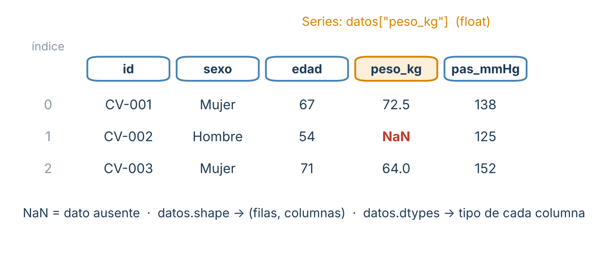
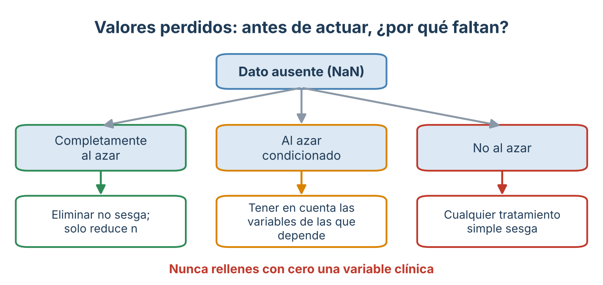
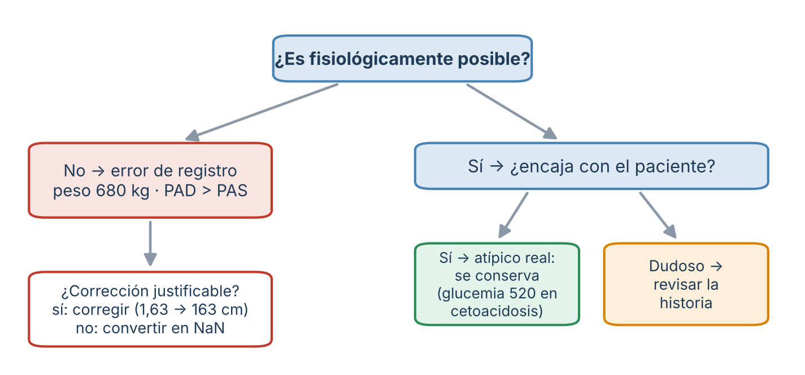

Bioestadística (1964) · Grado en Medicina · Curso 2027-2028
Tema 100Estructuras de datos con Pandas: tratamiento de valores perdidos y atípicos en registros clínicos
Módulo 3. Procesado inicial de datos
Fernando Borrás Rocher · Universidad Miguel Hernández de Elche · CC BY 4.0
Objetivos de aprendizaje
Al terminar esta sesión serás capaz de:
- Cargar un registro clínico en un DataFrame de Pandas y explorar su estructura.
- Seleccionar columnas, filtrar filas y crear variables nuevas.
- Detectar y corregir registros duplicados y categorías escritas de formas distintas.
- Cuantificar los valores perdidos y decidir cómo tratarlos sin sesgar el análisis.
- Distinguir un error de registro de un valor atípico real, con reglas de plausibilidad fisiológica y con el criterio del rango intercuartílico.
- Documentar cada decisión de limpieza en un registro auditable.
Cómo usar esta presentación
Usa el selector de arriba para dar el tema en una sesión completa o en dos sesiones intercaladas.
🎓 Sesión de clase magistral
- 1. Caso clínico de partida 5 min
- 2. Conceptos clave 10 min
- 5. Autoevaluación 5 min
Explica los conceptos, haz la pausa activa y cierra con las ideas clave.
💻 Sesión de Colab
- 3. Demostración: limpieza de un registro clínico 20 min
- 4. Práctica en la app Bioestadística 10 min
- 5. Autoevaluación 5 min
Cada estudiante abre su copia del cuaderno, predice el resultado y después ejecuta la celda.
Teclas: ← → para pasar · N notas del profesor · M cambiar de modo · F pantalla completa · Esc índice.
1. Caso clínico de partida
Un peso medio de 78 kg… con un paciente de 680 kg
- Una media se calcula siempre, aunque los datos estén mal: ningún error impide hacer la cuenta.
- Antes de analizar, se limpia, y cada decisión queda documentada en un registro de limpieza.
2. Conceptos clave
2.1 Pandas y el DataFrame
Anatomía de un DataFrame

- Filas = pacientes; columnas = variables; cada columna es una Series con su tipo.
- NaN marca un dato ausente: pandas lo excluye de las medias y lo cuenta con .isna().
2. Conceptos clave
2.2 Valores perdidos

Pandas representa los datos ausentes como NaN (not a number). Antes de decidir qué hacer con ellos hay que preguntarse por qué faltan:
| Mecanismo | Significado | Ejemplo clínico | Consecuencia |
|---|---|---|---|
| Completamente al azar | La ausencia no depende de nada | Se perdió un tubo de la muestra | Eliminar los casos no sesga, solo reduce la muestra |
| Al azar condicionado | Depende de otras variables registradas | A los más jóvenes se les pide menos colesterol | Hay que tener en cuenta esas variables |
| No al azar | Depende del propio valor ausente | Los pacientes más obesos evitan pesarse | Cualquier tratamiento simple sesga el resultado |
Rellenar con cero nunca es correcto para una variable clínica. Rellenar con la media (imputación simple) mantiene el tamaño de la muestra, pero reduce artificialmente la variabilidad.
2. Conceptos clave
2.3 Errores de registro y valores atípicos
¿Error de registro o valor atípico real?

- Un error es imposible o incoherente: se corrige si se puede justificar o se convierte en NaN.
- Un atípico real es extremo pero posible: se conserva. Eliminarlo sesga el análisis.
Pausa activa
Piensa 30 segundos, comenta con quien tienes al lado y vota.
En un registro, un paciente pesa 680 kg. ¿Qué es lo más adecuado?
En la sesión de Colab
Lo que acabas de ver se comprueba con datos en el cuaderno del Tema 100.
- Abre el cuaderno y guarda tu copia: Archivo → Guardar una copia en Drive.
- Ejecuta la celda de configuración.
- Ve a la demostración y predice cada resultado antes de ejecutar.
3. Demostración: limpieza de un registro clínico
3.1 Cargar y explorar
▶ En tu cuaderno: 3.1 Cargar y explorar. Antes de ejecutar, escribe qué esperas obtener.
import pandas as pd
import numpy as np
URL = "https://raw.githubusercontent.com/fborrasumh/bioestadistica/main/datos/cohorte_cardiovascular.csv"
cohorte = pd.read_csv(URL)
print("Filas y columnas:", cohorte.shape)
cohorte.head()cohorte.info()Observa en info() que algunas columnas tienen menos valores no nulos que filas: son los valores perdidos.
cohorte.describe().round(1)describe() ya muestra los problemas: un peso máximo de 680 kg y una talla mínima de 1,6 cm. También una PAD máxima de 163 mmHg y una glucemia máxima de 1.120 mg/dL.
3. Demostración: limpieza de un registro clínico
3.2 Seleccionar, filtrar y crear variables
▶ En tu cuaderno: 3.2 Seleccionar, filtrar y crear variables. Antes de ejecutar, escribe qué esperas obtener.
# Una columna
print(cohorte["edad"].head(3))
# Varias columnas
print(cohorte[["id", "edad", "pas_mmHg"]].head(3))
# Filtrar: pacientes de 75 años o más del CS Centro
mayores = cohorte[(cohorte["edad"] >= 75) & (cohorte["centro"] == "CS Centro")]
print("Pacientes de 75 años o más en CS Centro:", len(mayores))Al combinar condiciones en Pandas se usan & (y), | (o) y ~ (no), con cada condición entre paréntesis.
3. Demostración: limpieza de un registro clínico
3.3 Registro de limpieza
▶ En tu cuaderno: 3.3 Registro de limpieza. Antes de ejecutar, escribe qué esperas obtener.
Antes de cambiar nada, creamos una lista donde anotar cada decisión.
registro_limpieza = []
def anotar(problema, decision, filas_afectadas):
registro_limpieza.append({"problema": problema, "decisión": decision, "filas": filas_afectadas})3. Demostración: limpieza de un registro clínico
3.4 Duplicados
▶ En tu cuaderno: 3.4 Duplicados. Antes de ejecutar, escribe qué esperas obtener.
duplicados = cohorte.duplicated().sum()
print("Filas duplicadas:", duplicados)
cohorte = cohorte.drop_duplicates()
anotar("Filas duplicadas", "Eliminadas", int(duplicados))
print("Pacientes únicos:", len(cohorte), "·", cohorte["id"].is_unique)3. Demostración: limpieza de un registro clínico
3.5 Categorías escritas de formas distintas
▶ En tu cuaderno: 3.5 Categorías escritas de formas distintas. Antes de ejecutar, escribe qué esperas obtener.
print(cohorte["sexo"].value_counts())
print(cohorte["fumador"].value_counts(dropna=False))cambiados = (~cohorte["sexo"].isin(["Mujer", "Hombre"])).sum()
cohorte["sexo"] = cohorte["sexo"].str.strip().str.lower().map(
{"mujer": "Mujer", "m": "Mujer", "hombre": "Hombre", "h": "Hombre"}
)
anotar("Sexo con distintas grafías", "Unificado a Mujer/Hombre", int(cambiados))
cambiados = (cohorte["fumador"].notna() & ~cohorte["fumador"].isin(["Sí", "No"])).sum()
cohorte["fumador"] = cohorte["fumador"].str.lower().map({"sí": "Sí", "si": "Sí", "no": "No"})
anotar("Fumador con distintas grafías", "Unificado a Sí/No", int(cambiados))
print(cohorte["sexo"].value_counts(), cohorte["fumador"].value_counts(dropna=False), sep="\n\n").map() sustituye cada valor según un diccionario. Un valor que no esté en el diccionario se convertiría en NaN; por eso conviene comprobar con value_counts() antes y después.
3. Demostración: limpieza de un registro clínico
3.6 Valores perdidos
▶ En tu cuaderno: 3.6 Valores perdidos. Antes de ejecutar, escribe qué esperas obtener.
perdidos = pd.DataFrame({
"n_perdidos": cohorte.isna().sum(),
"porcentaje": (cohorte.isna().mean() * 100).round(1),
})
perdidos[perdidos["n_perdidos"] > 0]Veamos cómo cambia el peso medio según la decisión que tomemos. Primero corregiremos los errores de peso (apartado 3.7); aquí solo mostramos el efecto de rellenar con cero:
peso = cohorte["peso_kg"]
print(f"Media ignorando los perdidos: {peso.mean():.1f} kg (n = {peso.notna().sum()})")
print(f"Media rellenando con cero: {peso.fillna(0).mean():.1f} kg (n = {len(peso)}) ← sesgada")Pandas ignora los NaN por defecto al calcular medias y otros estadísticos. Es lo correcto si los datos faltan al azar; en otro caso, hay que estudiar el patrón de ausencias. Lo que nunca se hace es sustituirlos por cero.
3. Demostración: limpieza de un registro clínico
3.7 Errores de registro: reglas de plausibilidad
▶ En tu cuaderno: 3.7 Errores de registro: reglas de plausibilidad. Antes de ejecutar, escribe qué esperas obtener.
Definimos rangos fisiológicamente plausibles para un adulto y revisamos los valores que quedan fuera.
rangos = {
"peso_kg": (30, 250),
"talla_cm": (120, 220),
"pas_mmHg": (70, 260),
"pad_mmHg": (30, 150),
"glucemia_mg_dl": (40, 600),
}
for variable, (minimo, maximo) in rangos.items():
fuera = cohorte[(cohorte[variable] < minimo) | (cohorte[variable] > maximo)]
print(f"{variable}: {len(fuera)} valores fuera de [{minimo}, {maximo}]")
if len(fuera) > 0:
print(" ", fuera[variable].tolist())Cada error requiere una decisión razonada:
- Tallas entre 1 y 2: se registraron en metros. La corrección es evidente: multiplicar por 100.
- Pesos de 680 y 7,4 kg: probablemente una coma desplazada (68,0 y 74), pero no podemos estar seguros. Los marcamos como perdidos.
- Glucemia de 1.120 mg/dL: probablemente un cero de más, pero sin certeza. La marcamos como perdida.
en_metros = cohorte["talla_cm"] < 3
cohorte.loc[en_metros, "talla_cm"] = cohorte.loc[en_metros, "talla_cm"] * 100
anotar("Talla registrada en metros", "Multiplicada por 100", int(en_metros.sum()))
imposible = (cohorte["peso_kg"] < 30) | (cohorte["peso_kg"] > 250)
cohorte.loc[imposible, "peso_kg"] = np.nan
anotar("Peso fisiológicamente imposible", "Marcado como perdido", int(imposible.sum()))
imposible = cohorte["glucemia_mg_dl"] > 600
cohorte.loc[imposible, "glucemia_mg_dl"] = np.nan
anotar("Glucemia > 600 mg/dL", "Marcada como perdida", int(imposible.sum()))Regla de coherencia: la presión diastólica no puede ser mayor que la sistólica. Si lo es, lo más probable es que se hayan intercambiado.
invertidas = cohorte["pad_mmHg"] >= cohorte["pas_mmHg"]
print(cohorte.loc[invertidas, ["id", "pas_mmHg", "pad_mmHg"]])
cohorte.loc[invertidas, ["pas_mmHg", "pad_mmHg"]] = cohorte.loc[invertidas, ["pad_mmHg", "pas_mmHg"]].values
anotar("PAD mayor que PAS", "Valores intercambiados", int(invertidas.sum())).loc[filas, columnas] selecciona y modifica a la vez filas y columnas concretas. Es la forma segura de cambiar valores en un DataFrame.
3. Demostración: limpieza de un registro clínico
3.8 Valores atípicos reales: el criterio del RIC
▶ En tu cuaderno: 3.8 Valores atípicos reales: el criterio del RIC. Antes de ejecutar, escribe qué esperas obtener.
q1, q3 = cohorte["colesterol_mg_dl"].quantile([0.25, 0.75])
ric = q3 - q1
limite_inferior, limite_superior = q1 - 1.5 * ric, q3 + 1.5 * ric
atipicos = cohorte[(cohorte["colesterol_mg_dl"] < limite_inferior) | (cohorte["colesterol_mg_dl"] > limite_superior)]
print(f"Límites de Tukey: {limite_inferior:.0f} a {limite_superior:.0f} mg/dL")
print("Valores atípicos:", sorted(atipicos["colesterol_mg_dl"].tolist()))Un colesterol total de 84 mg/dL es inusual, pero posible. Es un valor atípico estadístico, no un error, y se conserva: eliminarlos ocultaría precisamente a los pacientes de mayor interés clínico.
3. Demostración: limpieza de un registro clínico
3.9 Variables derivadas y resultado final
▶ En tu cuaderno: 3.9 Variables derivadas y resultado final. Antes de ejecutar, escribe qué esperas obtener.
cohorte["imc"] = (cohorte["peso_kg"] / (cohorte["talla_cm"] / 100) ** 2).round(1)
cohorte.describe().round(1)pd.DataFrame(registro_limpieza)cohorte.to_csv("cohorte_limpia.csv", index=False)
print("Guardado cohorte_limpia.csv con", len(cohorte), "pacientes")Ampliación
Ampliación: auditar una limpieza hecha por IA
Si pides al asistente «limpia este conjunto de datos», probablemente propondrá eliminar filas. Por ejemplo, todas las filas con valores perdidos (dropna()) o los atípicos según algún criterio. Antes de aceptarlo:
- Pide que explique cada paso y la razón clínica o estadística.
- Comprueba cuántas filas se pierden:
dropna()sobre toda la tabla puede eliminar un tercio de los pacientes. - Comprueba que no se eliminan valores atípicos reales.
- Compara cinco valores antes y después, a mano.
- Exige un registro de limpieza como el del apartado 3.3.
original = pd.read_csv(URL)
print("Pacientes originales:", len(original))
print("Pacientes tras dropna() sobre toda la tabla:", len(original.dropna()))Ampliación
Ampliación: imputación por la media
hdl = cohorte["hdl_mg_dl"]
hdl_imputado = hdl.fillna(hdl.mean())
print(f"Desviación típica original: {hdl.std():.2f} mg/dL")
print(f"Desviación típica imputada: {hdl_imputado.std():.2f} mg/dL ← subestimada")Rellenar con la media no cambia la media, pero reduce la variabilidad. Entonces los intervalos de confianza y las pruebas estadísticas parecen más precisos de lo que son. Existen métodos mejores, como la imputación múltiple, que quedan fuera de este curso.
Ampliación
Ampliación: errores frecuentes
Rellenar con cero los valores perdidos de una variable clínica.
Eliminar todos los valores atípicos sin distinguir errores de valores extremos reales.
Usar and/or en lugar de &/| al filtrar con Pandas: produce ValueError.
Olvidar los paréntesis en las condiciones combinadas: cohorte["edad"] >= 65 & cohorte["diabetes"] == "Sí" no hace lo que parece.
Modificar una copia en lugar del original: para cambiar valores, usar siempre .loc[filas, columna].
No documentar los cambios: el análisis deja de ser reproducible.
Ampliación
Ampliación: Fechas clínicas con pandas
Las fechas suelen llegar como texto ("03/02/2026"). Con texto no se pueden restar fechas ni agrupar por mes. pd.to_datetime() las convierte en fechas reales.
Indica siempre el formato (format="%d/%m/%Y"). Si no, pandas puede leer el 03/02 como 2 de marzo. Con errors="coerce", una fecha imposible pasa a ser un valor perdido (NaT) y no detiene el análisis.
En tus materiales SIMUSTAT: Tema 70. Módulos math, random, time e instalación de módulos externos, apartado 4. En tus materiales SIMUSTAT: Tema 170. Gestión de datos con Pandas y tratamiento de valores anómalos, apartado 4 (series temporales).
ingresos = pd.DataFrame({
"id": ["H1", "H2", "H3", "H4"],
"ingreso": ["03/02/2026", "15/02/2026", "28/02/2026", "02/03/2026"],
"alta": ["10/02/2026", "16/02/2026", "31/02/2026", "09/03/2026"], # 31/02 no existe
})
for col in ["ingreso", "alta"]:
ingresos[col] = pd.to_datetime(ingresos[col], format="%d/%m/%Y", errors="coerce")
ingresos["estancia_dias"] = (ingresos["alta"] - ingresos["ingreso"]).dt.days
ingresos["mes_ingreso"] = ingresos["ingreso"].dt.month
print(ingresos)
print("\nFechas no válidas:", ingresos["alta"].isna().sum())
print("Estancia media:", ingresos["estancia_dias"].mean().round(1), "días")La fecha de alta de H3 no existe; queda como NaT y su estancia como valor perdido. Igual que con cualquier valor perdido, regístralo y revísalo en la fuente: no lo rellenes.
4. Práctica en la app Bioestadística
Abre la unidad 100 de la app Bioestadística y completa sus misiones:
- Misión básica (sin asistente): clasificar valores como error de registro, valor atípico real o dato plausible.
- Misión clínica (con pistas): limpiar un registro sintético de pacientes con EPOC y presentar su registro de limpieza.
- Misión reto (con asistente): pedir al asistente que limpie el registro. Auditar su propuesta con los cinco pasos de la ampliación y corregir lo que no sea aceptable.
Al terminar, exporta el informe de la unidad.
5. Autoevaluación
Responde sin asistente y sin ejecutar código.
5. Autoevaluación
Elige una opción: verás la explicación.
En un registro, un paciente pesa 680 kg. ¿Qué es lo más adecuado?
Un paciente tiene un colesterol total de 340 mg/dL, por encima del límite de Tukey. ¿Qué haces?
¿Qué expresión selecciona a los pacientes de 65 años o más que son fumadores?
Faltan 18 pesos de 400. ¿Qué efecto tiene rellenarlos con 0 antes de calcular el peso medio?
¿Por qué no conviene eliminar todas las filas con algún valor perdido (dropna sobre toda la tabla)?
Ideas clave
- Un DataFrame es una tabla: una fila por paciente, una columna por variable.
info(),describe()yvalue_counts()son la primera revisión obligatoria de cualquier conjunto de datos.- Los valores perdidos se cuantifican y se tratan según por qué faltan; nunca se rellenan con cero.
- Un error de registro se corrige o se marca como perdido; un valor atípico real se conserva.
- Cada decisión de limpieza se anota en un registro.
Glosario
| Término | Definición |
|---|---|
| DataFrame | Tabla de datos de Pandas, con filas y columnas |
| Series | Columna de un DataFrame |
NaN |
Valor perdido en Pandas |
| Imputación | Sustitución de un valor perdido por un valor estimado |
| Error de registro | Valor imposible o incoherente, debido a un fallo al registrar el dato |
| Valor atípico | Valor extremo, alejado del resto, pero posible |
| Rango intercuartílico | Diferencia entre los percentiles 75 y 25 |
| Registro de limpieza | Documento que recoge cada cambio realizado en los datos y su motivo |
Para saber más
- Guía de inicio de Pandas
- Pandas: trabajar con datos perdidos
- Sterne JAC, et al. Multiple imputation for missing data in epidemiological and clinical research: potential and pitfalls. BMJ. 2009;338:b2393. doi:10.1136/bmj.b2393
- SIMUSTAT Unidigital UMH. Tema 70. Módulos math, random, time e instalación de módulos externos. Cuaderno de Google Colab. Elche: Universidad Miguel Hernández; 2023.
- SIMUSTAT Unidigital UMH. Tema 170. Gestión de datos con Pandas y tratamiento de valores anómalos. Cuaderno de Google Colab. Elche: Universidad Miguel Hernández; 2023.